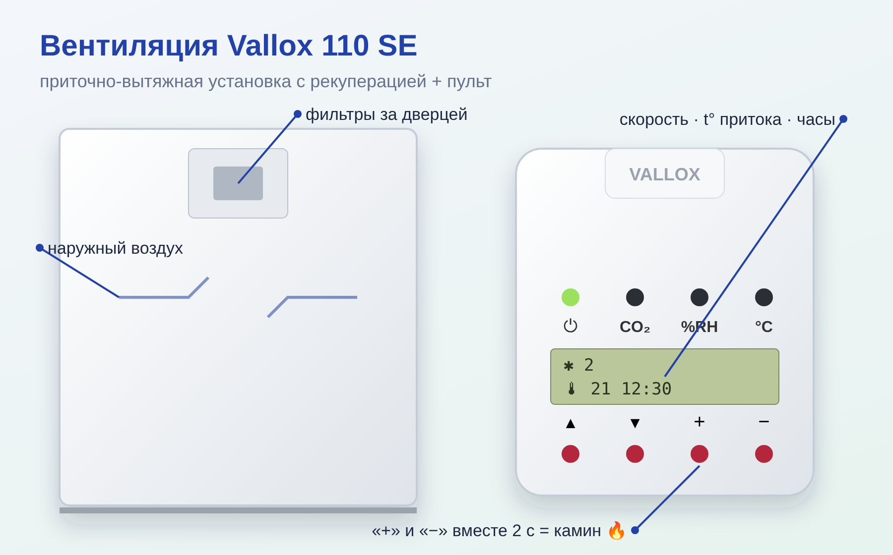
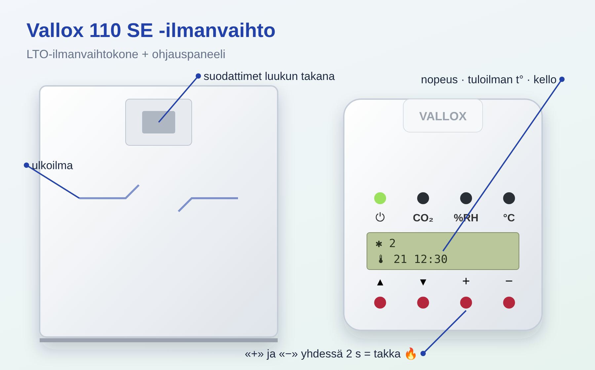

• Вентиляция работает круглосуточно и круглый год — НЕ выключать, даже уезжая (иначе сырость, конденсат, плесень). Уезжая — поставить скорость 1–2. • Нормальный режим меняет весь воздух дома примерно за 2 часа. • После отключения света установка сама запускается на минимальной скорости, настройки сохраняются.
• ⏻ — вкл/выкл (лампа горит = работает). • CO₂ — авто-усиление по углекислому газу (лампа = включено), норма до ~1000 ppm. • %RH — авто-усиление по влажности (лампа = включено), цель ~45 %, зимой не выше 60 %. • °C с волнами — догрев приточного воздуха (лампа не горит = летний режим). • ▲ ▼ — листать экраны. + / − — менять значение. • Экраны: 1) скорость, t° притока, часы; 2) влажность и CO₂; 3) температуры: улица, дом, приток, вытяжка.
• На главном экране + / − меняют скорость 1…8. Обычно 2–3. Скорость 2 ≈ 115 м³/ч, 3 ≈ 162 м³/ч, 4 ≈ 209 м³/ч. • Для сауны/гостей/душа — поднять до 4–6, потом вернуть. • Температура притока настраивается 10…30 °C (листать ▼ до нужного экрана, + / −).
1. На главном экране одновременно зажать «+» и «−» на 2 секунды. 2. Появится значок камина: вытяжной вентилятор стоит 15 минут, приток работает — дом в лёгком избыточном давлении, тяга лучше, дым не идёт в комнату. 3. Через 15 минут вытяжка включится сама; если огонь ещё слабый — повторить. • Если вместо этого вентиляция усилилась (45 минут) — в меню настроек «Takka-/tehostuskytkin» выбран «Tehostus»; переключить на «Takkakytkin». Вход в меню настроек: + и − одновременно (не на главном экране).
• Значок обслуживания на экране появляется по таймеру (обычно раз в 4 месяца) — пора заняться фильтрами. • Грубые фильтры (G3, полотно) — промыть в тёплой воде 25–30 °C с моющим средством 2–4 раза в год, не выкручивать; хватает на 3–4 стирки (~2 года). Запасное белое полотно лежит на тепловом насосе. • Тонкий фильтр притока (F7 / ePM1 55 %, наш размер 248×230×96, Nr. 22) — водой НЕЛЬЗЯ; пропылесосить, менять раз в год, лучше осенью. Ставить стрелкой AIRFLOW по ходу воздуха. • Открытая дверца выключает установку (защитный выключатель) — после обслуживания плотно закрыть. • Сбросить напоминание: на экране сброса обслуживания нажать + и − одновременно.
• Достать теплообменник (кассету рекуперации), если грязный — замочить в воде с моющим средством, ополоснуть душем, дать стечь воде, поставить надписью «this side up» вверх. • Лопасти вентиляторов — продуть сжатым воздухом (пистолет-продувка), воду на электрику не лить. • Осенью проверить слив конденсата: налить немного воды в нижний поддон — должна уходить.
• Осень: фильтры, проверка слива, включить догрев (°C). • Весна: фильтры, при необходимости почистить вентиляторы, выключить догрев (летний режим).
• Холодный приток — обмёрз теплообменник или грязные фильтры: почистить фильтры. • «Exh/Sup/Inp/Out air sensor faulty» — неисправен датчик → сервис. • «Bus fault» — ошибка связи пульта; работает на скорости 1 → сервис. • «FREEZING ALERT» — защита от замерзания водяного калорифера → срочно сервис. • «Carbon dioxide alarm» — CO₂ выше 5000 ppm: проверить, нет ли задымления/пожара. • Пульт не реагирует — выключить автомат «IV kone» в щите на 30 секунд и включить. • Не работает совсем — закрыта ли дверца; автомат «IV kone»; предохранитель T800 mA внутри → сервис.
• The ventilation runs around the clock, all year round — do NOT switch it off, even when going away (otherwise damp, condensation, mould). When going away, set speed 1–2. • Normal mode replaces all the air in the house in about 2 hours. • After a power cut the unit restarts by itself at minimum speed; settings are kept.
• ⏻ — on/off (lamp lit = running). • CO₂ — automatic boost based on carbon dioxide (lamp = on), normal up to ~1000 ppm. • %RH — automatic boost based on humidity (lamp = on), target ~45 %, in winter no higher than 60 %. • °C with waves — supply air post-heating (lamp not lit = summer mode). • ▲ ▼ — scroll through screens. + / − — change the value. • Screens: 1) speed, supply air t°, clock; 2) humidity and CO₂; 3) temperatures: outdoor, indoor, supply, exhaust.
• On the main screen + / − change the speed 1…8. Usually 2–3. Speed 2 ≈ 115 m³/h, 3 ≈ 162 m³/h, 4 ≈ 209 m³/h. • For sauna/guests/shower — raise to 4–6, then set it back. • The supply air temperature is adjustable 10…30 °C (scroll ▼ to the right screen, + / −).
1. On the main screen press and hold "+" and "−" together for 2 seconds. 2. The fireplace symbol appears: the exhaust fan stops for 15 minutes while the supply keeps running — the house is under slight overpressure, the draught is better, smoke does not come into the room. 3. After 15 minutes the exhaust starts again by itself; if the fire is still weak — repeat. • If instead the ventilation boosts (45 minutes), the setting "Takka-/tehostuskytkin" in the settings menu is set to "Tehostus"; switch it to "Takkakytkin". To enter the settings menu: + and − together (not on the main screen).
• The service symbol appears on the screen by timer (usually every 4 months) — time to see to the filters. • Coarse filters (G3, fabric) — wash in warm water 25–30 °C with detergent 2–4 times a year, do not wring; they last 3–4 washes (~2 years). Spare white filter fabric is kept on top of the heat pump. • Fine supply filter (F7 / ePM1 55 %, our size 248×230×96, Nr. 22) — NO water; vacuum it, replace once a year, preferably in autumn. Fit it with the AIRFLOW arrow pointing in the direction of the airflow. • An open door switches the unit off (safety switch) — close it tightly after maintenance. • To reset the reminder: on the service reset screen press + and − together.
• Take out the heat exchanger (heat-recovery cell); if dirty, soak it in water with detergent, rinse with the shower, let the water drain, refit it with the "this side up" label facing up. • Fan blades — blow clean with compressed air (air blow gun); do not pour water on the electrics. • In autumn check the condensate drain: pour a little water into the bottom tray — it must drain away.
• Autumn: filters, drain check, switch on post-heating (°C). • Spring: filters, clean the fans if needed, switch off post-heating (summer mode).
• Cold supply air — heat exchanger iced up or dirty filters: clean the filters. • "Exh/Sup/Inp/Out air sensor faulty" — sensor fault → service. • "Bus fault" — control panel communication error; runs at speed 1 → service. • "FREEZING ALERT" — frost protection of the water heating coil → service urgently. • "Carbon dioxide alarm" — CO₂ above 5000 ppm: check for smoke/fire. • Control panel does not respond — switch off the "IV kone" breaker in the panel for 30 seconds and switch it back on. • Does not work at all — is the door closed; the "IV kone" breaker; the T800 mA fuse inside → service.

• Ilmanvaihto on päällä ympäri vuorokauden ja ympäri vuoden — ÄLÄ sammuta sitä edes matkan ajaksi (muuten seurauksena kosteutta, kondenssia ja hometta). Matkan ajaksi aseta nopeus 1–2. • Normaalitilassa koko talon ilma vaihtuu noin 2 tunnissa. • Sähkökatkon jälkeen kone käynnistyy itsestään pienimmällä nopeudella, asetukset säilyvät.
• ⏻ — päälle/pois (merkkivalo palaa = käynnissä). • CO₂ — automaattinen tehostus hiilidioksidipitoisuuden mukaan (merkkivalo = päällä), normaali taso enintään ~1000 ppm. • %RH — automaattinen tehostus kosteuden mukaan (merkkivalo = päällä), tavoite ~45 %, talvella enintään 60 %. • °C ja aallot — tuloilman jälkilämmitys (merkkivalo ei pala = kesätila). • ▲ ▼ — näyttöjen selaus. + / − — arvon muuttaminen. • Näytöt: 1) nopeus, tuloilman lämpötila, kello; 2) kosteus ja CO₂; 3) lämpötilat: ulkoilma, sisäilma, tuloilma, poistoilma.
• Päänäytössä + / − muuttavat nopeutta 1…8. Yleensä 2–3. Nopeus 2 ≈ 115 m³/h, 3 ≈ 162 m³/h, 4 ≈ 209 m³/h. • Saunomisen, vieraiden tai suihkun ajaksi nosta nopeus 4–6:een ja palauta sen jälkeen. • Tuloilman lämpötila on säädettävissä 10…30 °C (selaa ▼ oikeaan näyttöön, + / −).
1. Paina päänäytössä "+" ja "−" yhtä aikaa pohjaan 2 sekunnin ajan. 2. Näyttöön tulee takkasymboli: poistoilmapuhallin pysähtyy 15 minuutiksi ja tuloilmapuhallin jatkaa — taloon syntyy lievä ylipaine, veto paranee eikä savu tule huoneeseen. 3. 15 minuutin kuluttua poistoilma käynnistyy itsestään; jos tuli on vielä heikko — toista. • Jos ilmanvaihto sen sijaan tehostuu (45 minuuttia), asetusvalikon kohtaan "Takka-/tehostuskytkin" on valittu "Tehostus"; vaihda se asentoon "Takkakytkin". Asetusvalikkoon pääsee painamalla + ja − yhtä aikaa (ei päänäytössä).
• Huoltosymboli tulee näyttöön ajastimen mukaan (yleensä 4 kuukauden välein) — on aika huoltaa suodattimet. • Karkeasuodattimet (G3, kangas) — pese 25–30 °C:n lämpimässä vedessä pesuaineen kanssa 2–4 kertaa vuodessa, älä väännä; kestävät 3–4 pesua (~2 vuotta). Varalla oleva valkoinen suodatinkangas on maalämpöpumpun päällä. • Tuloilman hienosuodatin (F7 / ePM1 55 %, meidän kokomme 248×230×96, Nr. 22) — vettä EI SAA käyttää; imuroi, vaihda kerran vuodessa, mieluiten syksyllä. Asenna niin, että AIRFLOW-nuoli osoittaa ilmavirran suuntaan. • Avoin luukku pysäyttää koneen (turvakytkin) — sulje luukku tiiviisti huollon jälkeen. • Muistutuksen kuittaus: paina huollon kuittausnäytössä + ja − yhtä aikaa.
• Irrota lämmönvaihdin (lämmöntalteenottokenno); jos se on likainen, liota sitä pesuainevedessä, huuhtele suihkulla, anna veden valua pois ja asenna takaisin niin, että teksti "this side up" on ylöspäin. • Puhaltimien siivet — puhalla puhtaaksi paineilmalla (puhalluspistoolilla), älä kaada vettä sähköosien päälle. • Tarkista syksyllä kondenssiveden poisto: kaada vähän vettä pohja-altaaseen — veden pitää valua pois.
• Syksy: suodattimet, kondenssiveden poiston tarkistus, jälkilämmitys päälle (°C). • Kevät: suodattimet, tarvittaessa puhaltimien puhdistus, jälkilämmitys pois (kesätila).
• Tuloilma on kylmää — lämmönvaihdin on jäätynyt tai suodattimet ovat likaiset: puhdista suodattimet. • "Exh/Sup/Inp/Out air sensor faulty" — anturi on viallinen → huolto. • "Bus fault" — ohjauspaneelin tiedonsiirtovirhe; kone käy nopeudella 1 → huolto. • "FREEZING ALERT" — vesipatterin jäätymissuojaus → huolto kiireellisesti. • "Carbon dioxide alarm" — CO₂ yli 5000 ppm: tarkista, ettei ole savua/tulipaloa. • Ohjauspaneeli ei reagoi — katkaise sähkökeskuksesta "IV kone" -sulake 30 sekunniksi ja kytke takaisin. • Ei toimi lainkaan — onko luukku kiinni; "IV kone" -sulake; sisällä oleva T800 mA -sulake → huolto.